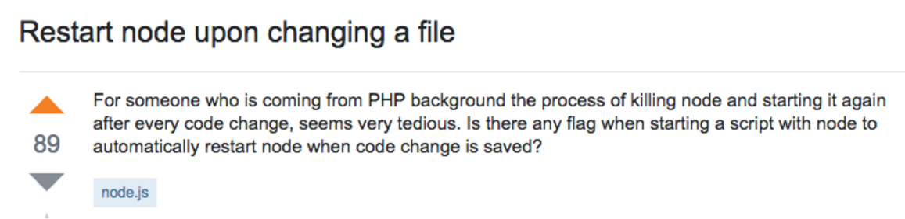
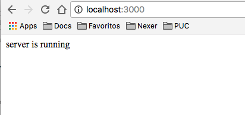

NodeJS
Parte 1
- 1. Acesse o site oficial: http://nodejs.org e clique em Download
- 2. Escolha a opção (TLS) de acordo com sua plataforma
- 3. Para verificar a instalação abra o seu terminal de comando e digite o comando:
node -v
Parte 2
- 1. Crie um diretório sua aplicação e acesse o diretório via terminal. Ex.
cd /Users/me/Documents/myproject/
- 2. Vamos criar um package.JSON executando
npm init
Nesse ponto, o NPM vai nos auxiliar em modo wizard para criar um pacote com as funcionalidades básicas de nossa aplicação.
Pra cada pergunta, preencha com os seguintes passos
- Nome do Pacote: teste
- versão: 0.0.1
- descrição: teste
- ponto de entrada: app.js
- test command: [pode deixar vazio]
- git repository: [pode deixar vazio]
- keywords: [pode deixar vazio]
- autor: [seu nome]
- licença: [pode deixar vazio]
Verifique se o arquivo package.json foi criado na raiz do diretório.
Parte 3
- 1. Instalar o pacote Express
npm install express --save

- 2. Instalar o pacote Nodemon. Ele vai restartar o processo sempre que houver mudanças de código:
npm install nodemon -g
- 3. Baixe o arquivo app.js e adicione na raiz.
- 4. Execute
nodemon app.js e espere a resposta abaixo:
[nodemon] 1.10.0
[nodemon] to restart at any time, enter `rs`
[nodemon] watching: *.*
[nodemon] starting `node app.js`
Listening on port 3000
Digite a url no seu browser e espere a seguinte resposta:

Conseguiu? Sim!